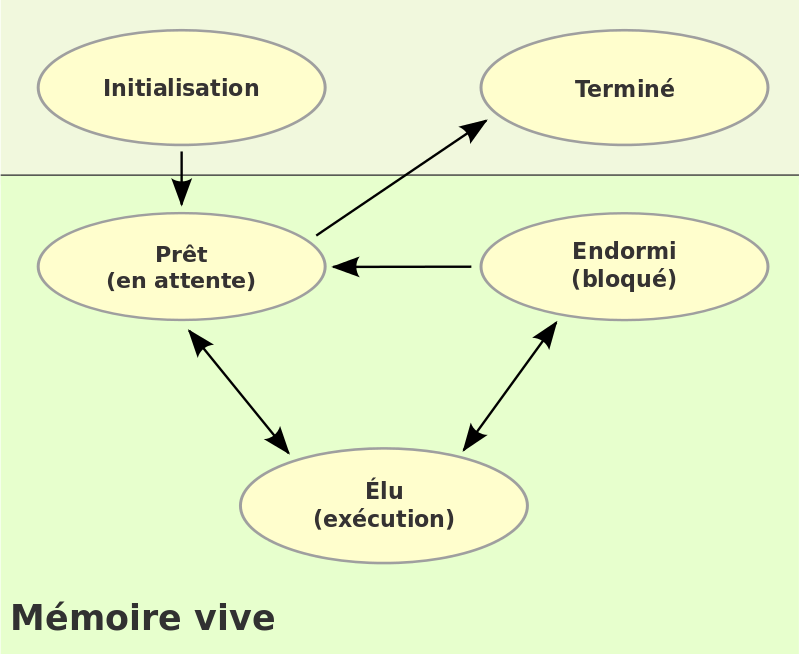
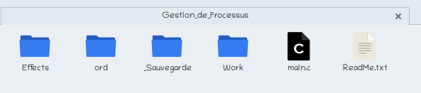

L'ordonnancement des processus est l'un des travaux importants effectués par le Microprocesseur par le biais d'un système d'exploitation. Ce dernier, afin de bien ordonner les processus, il utilise des critères dites Critères d'ordonnancements. Ces critères vont constituer donc les algorithmes d'ordonnancement que le système d'exploitation va s'en servir afin que le système exécute les processus dans un ordre choisis.
Fonctionnalités
La fonctionnalité première de ce programme est l'ordonnancement des processus dont à la fin de l'ordonnancement le programme donnera une sortie du résultat de l'ordonnancement.
Les fonctionnalité actuelles du projets sont :
La saisie des informations de chaque processus (Lecture à partir du clavier).
La lecture des processus à partir d'un fichier qui doit obligatoirement respecter une structure prédéfinie sur le programme.
Sauvegarde de tous les processus lus par le programme dans un fichier texte.
Suppression d'un ou plusieurs processus (Suppression en tête de la liste des processus).
Affichage d'un schéma Temporel des processus lu par le programme.
Affichage des principaux données des processus lu par le programme + le temps de rotation de chacun suivant l'algorithme FIFO et TOURNIQUET. Pour le TOURNIQUET un quantum sera saisie par l'utilisateur avant d'afficher le temps de rotation.
Algorithme d'ordonnancement des processus :
Deux types d'ordonnancement ont été implémenté ( voir le tableau suivantes).
Liste d'attente des Processus prêts
Liste d'attente des Processus Bloqués
Type 1
TOURNIQUET
FIFO
Type 2
FIFO
FIFO
Remarque : Pour le tourniquet un quantum sera saisie par l'utilisateur.
Une meilleure gestion de la mémoire allouée dynamiquement.
Des animations qui accompagnent l'éxecution du programme
Des Menu dynamisés
Prochainement il y aura l'ajout des autres algorithmes d'ordonnancement à savoir le SRT, SJF,..., Ordonnancement avec une priorité statique ainsi que priorité dynamique...
L'ordonnancement des processus est l'un des éléments clé qu'un système d'exploitation doit pouvoir faire. Le système d'exploitation va mettre les processus dans une liste d'attente et sélectionner le(s) processus qui seront élu(s) et ceux devront éffectuer les Entrées/Sortie (ES).
Au fait, un processus peut avoir jusqu'à quatre etats possibles lorsqu'il est charger dans la mémoire RAM.
Elu

États que peut prendre un processus sous la forme d'un diagramme états-transitions où les flèches sont les transitions autorisées.
Source : Wikipedia
Un processus est élu lorsqu'il est chargé dans le microprocesseur, on dit qu'il est en exécution.
Prêt
On dit qu'un processus est élu lorsqu'il attend qu'un processus élu soit décharger de la RAM pour être élu.
Effectue les E/S
Un processus éffectue les E/S lorsqu'il utilise une autre périphérique autre que le processeur tel que :
Le clavier
L'écran
Une imprimante
Un clé usb
Un stockage de masse
...
Bloqué
Un processus est bloqué lorsqu'il est en attente d'un périphérique d'ES
Un processus est à l'etat terminé lorsqu'il n'est pas dans les quatres etat définis ci-haut
B - L'ordonnancement des processus
Les processus concurrents doivent se partager le processeur, la mémoire et les entrées/sorties.
Dans les systèmes anciens, les systèmes de traitement par lots mais aussi les systèmes d'exploitation pas vraiment multitâches tels que Windows 9x, l'ordonnancement était de type coopératif. L'ordonnanceur n'intervenait que lorsque le processus en cours se terminait ou se bloquait. Ce système assez sommaire convenait aux traitements par lots quand le temps de réponse n'avait que peu d'importance.
Actuellement, sur les systèmes interactifs multitâches, parfois même multi utilisateurs et multi processeurs, l'ordonnancement doit être préemptif. L'ordonnanceur ne peut laisser un processus monopoliser les ressources du système et réquisitionne régulièrement le processeur pour en répartir la disponibilité entre les processus qui simultanément sont prêts à être exécutés. La politique suivie pour déterminer la manière d'ordonnancer les processus est fonction de nombreux critères parfois contradictoires. Le fait de favoriser certaines catégories de tâches peut en léser d'autres.
On distingue cinq algorithme :
FCFS - Fist-come First-served (FIFO) = Premier arrivé / Premier servi
SJF - Shorted Job First = le job le plus court d'abord
SRT - Shorted Remaining Time = l'algorithme du temps restant le plus court
RR - Round Robin = L'algorithme du tourniquet
L'ordonnancement avec priorité
Dans ce projet les algorithmes utilisés est une combinaison du FIFO avec TOURNIQUET.
Code source du projet
Le projet est écris en langage C.
Vu que le code du projet allait être long, le fichier qui allait contenir le projet est subdivisé en plusieurs sous-fichiers rélié entre eux (Programmation modulaire).
Hierarchie du code source
Soit Gestion_de_processus le repertoire principal contenant l'nsemble du projet
Gestion_de_processus/
Effects/
effects.c
effects.h
ord/
ordonne.c
ordonne.h
Work/
fonct.c
fonct.h
main.c
Au cours de l'éxecution du programme un autre repertoire sera créer automatiquement et se repertoire contiendra une sauvegarde des processus lus pas le programme.
Les fichiers qui seront contenu dans ce repertoire seront de la forme saveX.txt avec X un nombre qui commence à 1. Le premier fichier de sauvegarde sera juste nommé save.txt
En voici un exemple
_Sauvegarde/
save.txt
save1.txt
save2.txt
save3.txt
...
saveN.txt
Si le programme a été éxecuté plus d'une fois nous aurons alors l'hierarcie suivante :
Gestion_de_processus/
_Sauvegarde/

Répertoire contenant l'ensemble du projet
{kind=link}